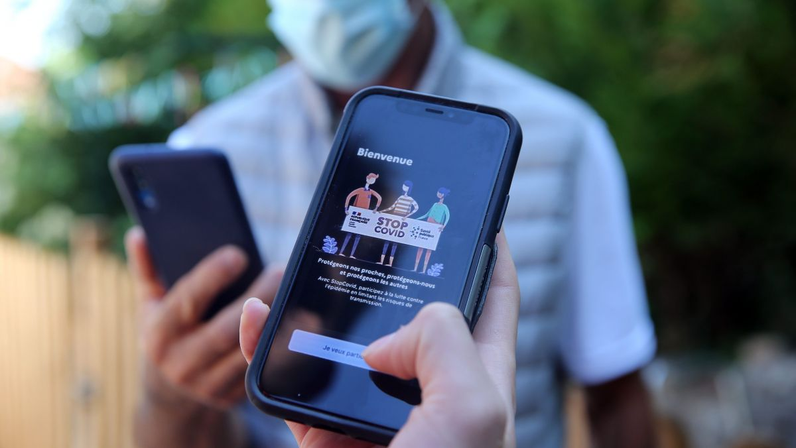

La deuxième vague du déconfinement est lancée ! Les Français vont pouvoir accéder aux parcs et aux jardins, mais surtout aux terrasses et restaurants en zone verte. Malgré cette lancée et la baisses des admissions en réanimations, les
dépistages sont multipliés et le gouvernement met en service l'application StopCovid. Cette application, tant contestée, est cencée identifier les personnes côtoyées par un malade du Covid-19, risquant de contracter la maladie à leur
tour. Elle sera disponible dès le 2 juin à midi à annoncé Cédric 0., le secrétaire d'Etat du numérique. Mais pourquoi cette application est tant redoutée ? Très attaché à l'éthyque dans le numérique, les français redoutent d'être surveillé
par le gouvernement une fois l'application installée. Et vous, allez-vous l'installer ?
Le président américain Donald Trump a été pris en photo en pleine épidémie du Covid-19 en train de jouer au golf. Après avoir visité une usine sans masque, le président fait de nouveau polémique en profitant de son week-end et en continuant
de minimiser cette crise sanitaire. Il a par ailleurs été accueilli par des doigts d'honneur le long de son trajet. En effet, reprendre le golf alors que les Etats-Unis va atteindre les 100 000 morts est vu comme une trahison par beaucoup
d'américain. Cependant, le président s'indique que ses nouvelles sorties au golf soient vu comme des "pêchés mortels" et pointe du doigt la haine et la malhonnêté des médias qui l'ont filmé.
Selon un média tenu par des nord-coréens ayant fait défection, le dictateur a été opéré en avril pour des problèmes cardio-vasculaires. En Corée du Nord, le 15 avril est synonyme de festivités aux quatre coins du pays. Et pour cause :
il s'agit de la date anniversaire de la naissance de Kim Il Sung, le fondateur du régime.Problème : le dictateur n'est apparu sur aucune photo officielle depuis une semaine. De quoi alimenter les rumeurs sur son état de santé.En l'occurrence,
c'est le Daily NK, un média en ligne géré essentiellement par des Nord-Coréens ayant fui le pays, qui a allumé la mèche. Le Daily NK avance même une explication : "La raison du traitement cardio-vasculaire urgent qu'a subi Kim était
son tabagisme excessif, son obésité et sa fatigue", dixit une source nord-coréenne anonyme. Depuis, le dictateur serait en convalescence dans une villa dans la province de Phyongan du Nord, toujours selon le média en ligne.